THE BRAIN BRAKE ANIMATIC
THE FILM STARTS ALMOST STILL AND OPENS OUT. The picture stands and one or two details live: pebbles, a leg, a tree, and then just the chest, so we watch him breathe and that is the only movement in the frame. Then it widens. The breath changes because he is less tired, the transition turns smooth, a real camera zooms when he sees the finish, and by the time he runs it is twenty five frames a second all the way. WHAT CHANGES THROUGH THE SCENE IS HOW MUCH OF THE FRAME IS ALIVE: from one detail, through more and more movement, to full animation. Then everything stops again when Manan walks in, and holds until 1-17, where movement announces itself inside the leg and opens into full animation. From that moment it stays full to the end of the scene. When the boy walks into the stopped picture he arrives as live action. The drawing stands still and the magnifying glass wobbles in his hand, as though somebody is really holding it. Then at 1-17 the picture under the glass comes alive, which is the surprise the whole stretch was built for. PROGRESS OF MOVEMENT THROUGH THE FILM. Movement goes from hard to easy. Running is effort, and it is the hardest thing in the film. The bicycle is lighter. The vortex carries him up. The lift carries him to the top of the body. The vortex carries him back down. And at the end he puts out a hand and the key falls into it. EVERYTHING OPENS. If a shot looks like it is straining, it is probably wrong.
The whole film as a storyboard, in order. 62 frames drawn, 2 holding as placeholders, 98 keyframes live in all. The count here is lower than the last because a shot with both a generated stand-in and a real footage composite shows one of them on this page and keeps the other for its scene page. Placeholders are shown on purpose, so what is still waiting is as visible as what is finished. This page is built from the catalogue, so it is current the moment anything is filed. Everything we have collected for each phase, kept and abandoned, is on brainstorm.
Title
2 drawnThe film opens on its own title, drawn in the film’s hand.
The marathon runner
24 drawnA MARATHON RUNNER runs. Not the boy: a man who has done this all his life, which is what makes the question worth asking. SIMPLIFIED 6.9.2026: animate it plainly. Nothing is drawn in stages and nothing runs at its own frame rate.
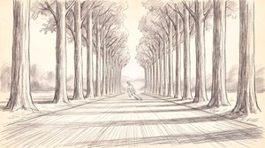
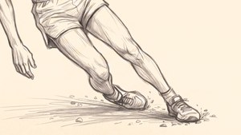
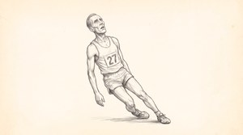
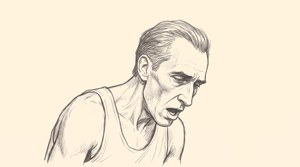
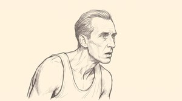
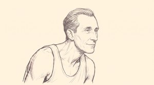
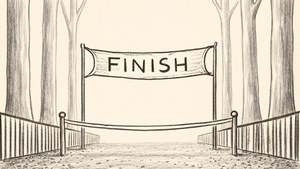
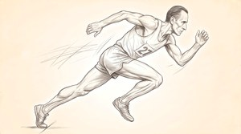
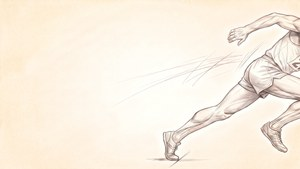

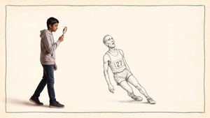
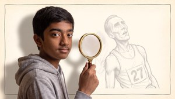
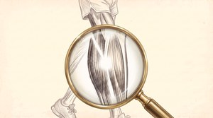
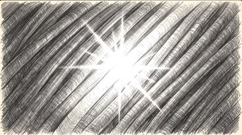
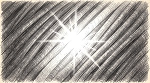
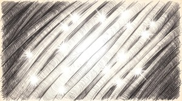
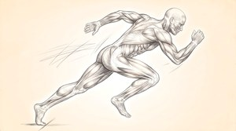
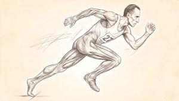
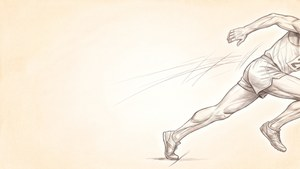

He takes the question outside
1 drawnHe cannot let it go, so he takes the question outside and puts it on himself. The hero plates for the road and the bicycle: what the world looks like before anybody rides through it. The last daylight in the film.
Riding the bicycle, interior
FINISHED1 drawnThe vortex, up
5 drawnHe closes his eyes and goes into the light, and the light carries him. He is lifted rather than falling, so his clothes and his hair stream DOWNWARD past him while he rises. The vortex opens, turns, and closes again, and the white closes around him exactly as it opened. Never explained, never mentioned. Then the light fades down.
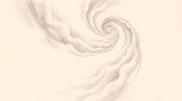
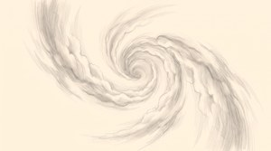
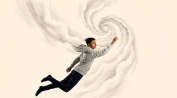

The house of the body, and the key door
5 drawnHe is carried up through the body, from the pelvis to the chest to the neck, and he does nothing: the lift takes him. The vertebrae stand behind glass, there to be SEEN and not used. At the top, set into the underside of the skull, the key door stands open with the clover cut above it and light coming out. He steps into the opening and looks in. ONE UNBROKEN MOVE, seen through his own eyes, with no cut anywhere in it.
He meets Viveka, and the two theories
7 drawnThe lift opens and he is in the head. One room, one chair, and a man who has been expecting him: VIVEKA, the Little Prince grown up, curls that recall the convolutions without being them, a cloak of stars because the pineal gland is the portal to the cosmos, AND THE GOLD KEY AT HIS CHEST from the first frame, long before it means anything. He asks for something impossible and the whole idea of the film gets done as a party trick. Then the two theories on the hologram: Manan never writes anything, he thinks it and Viveka visualises it, and Viveka answers in the same places with every value reversed. Then the word lands on the object and he lifts the key off his neck.
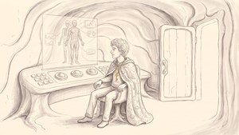
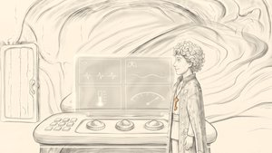
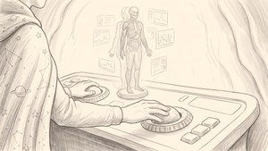
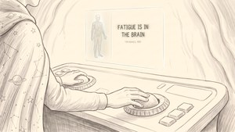
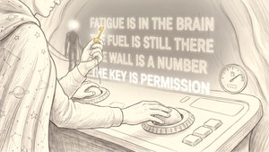
The conclusion, and goodbye
1 referenceViveka lets the key go, it falls through an empty frame, and we cut to Manan catching it. THE END.
He arrives out of the white and the door is already giving off light. One continuous pull back from here: as the camera draws away he goes inside, and by the time we see the whole building the door is shut. He is keyed into the doorway and taken out of the composite part way through, so he is never drawn.
He falls, and then the key falls
10 drawnTWO FALLS, AND THEY ARE NOT THE SAME BEAT. First he goes back out through the vortex that brought him in, turning the other way, head first, with the trail streaming upward past him because he is falling now and not being carried. Then, separately, Viveka lets the key go and it falls after him: gold, the only colour in the film, never upright and never flat to the lens, in front of a strip of the film itself held up to the light and running backwards. The key stays sharp and the strip smears, because the camera falls with the key and not with the memories.

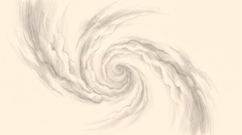
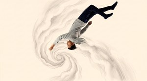
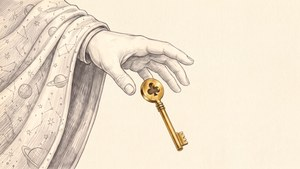
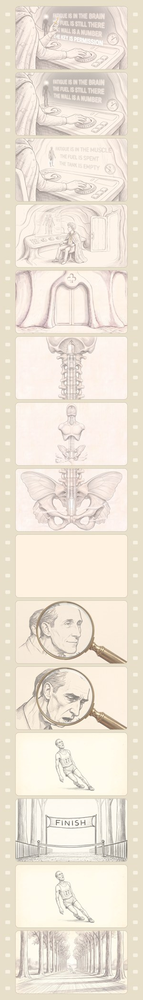
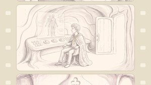
He catches it
2 drawn, 1 shotCredits, and the dedication
3 drawnTHE BRAIN BRAKE
The Central Governor Theory · Breakthrough Junior Challenge 2026